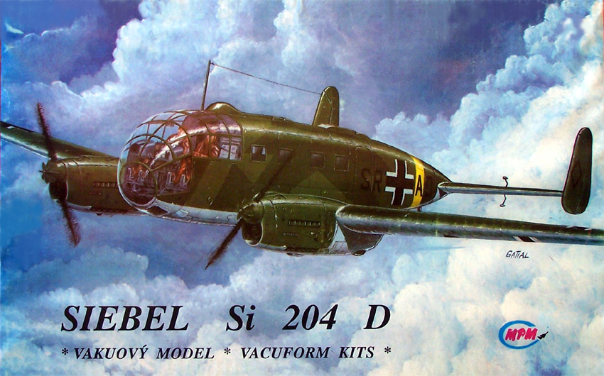
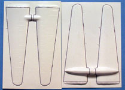
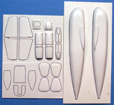
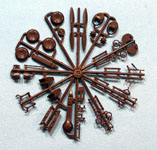
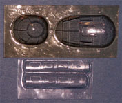
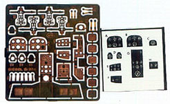
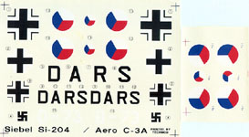

{kind=link}
{kind=link}
{kind=link}
{kind=link}
{kind=link}


MPM 1/48 Siebel 204-D

Kit #48012
Collector�s Market Value $45.00
Images and text Copyright � 2006 by Matt Swan
Developmental Background
The Siebel 204 was a development of the utility aircraft category requested by the RLM in 1938. Previous utility and training aircraft like the Fw-58 were becoming obsolete and the need for a more advanced aircraft was readily apparent. The first two prototypes were delivered as a passenger aircraft to accommodate a crew of two and eight passengers with a stepped cockpit but the design was changed in 1940 to include a bulbous all glass cockpit. Development and production of the type was relatively slow as Siebel was already under contract to build the Ju-88 and by 1942 only about fifteen examples had rolled off the line. In late 1942 and into 1943 production of the type was farmed out to several other manufactures including BMW, SNCAN in France and Aero Company in the Czech Protectorate. When France was liberated in 1944 production ceased and BMW changed over to spare parts production only. Aero Company continued manufacturing the type until mid 1945 when all production on the type ceased with a total estimated production of about 1300 aircraft from all manufactures.
The Si-204 was an all metal aircraft powered by two Argus 411 V-12 engines producing about 592 hp each. Most units featured two blade propellers with pitch adjustment however a few examples did have three blade propellers installed in the field. Handling characteristics were very good and the aircraft was reported to be a pleasure to fly. The type was used as a trainer aircraft for advanced studies and blind flying techniques. It was also used heavily as an aerial taxi transporting air crews and Luftwaffe staff between air bases and as a communications aircraft and aerial ambulance. In 1944 five aircraft were requisitioned for conversion to pre-series Si 204 E-0 night fighters but that program never reached fruition and no Si-204s were ever recorded as entering combat. After the war individual units continued in service around Europe and Russia as general cargo aircraft and even after they were no longer serviceable as flying machines derelict fuselages were used by farmers as storage sheds and even in one case as a motorcycle garage. The type served with the Swedish air force as an aerial mapping aircraft until 1960. Today several intact, restored aircraft are on display in museums and it is not uncommon to find derelict pieces and parts in the European countryside.
The Kit
This is an old multi-media vacuformed kit that has been out of production for many, many years. When this was first kitted it was well ahead of it�s time with photo etched instrument panels and acetate backing sheets. Fortunately when this was boxed a good heavy duty corrugated cardboard stock was used so the kit survived the years well. Inside the box we have four sheets of heavy white polystyrene cavity molded parts. These sheets cover the basic fuselage, wing and larger internal parts like cockpit floor pan and bulkheads. Gear doors are molded in the closed position in the wing nacelles but are duplicated on another sheet for use in the open position. The exterior parts display good consistent engraved panel lines and surface detail. There are several large vacuforming dimples scattered across the parts and these are very pronounced on the wings. This is an unfortunate trade-off for the good detail level and can be remedied with some careful razor knife work. In the images below I have already traced the parts with a black magic marker to make them more visible. With previous old MPM vac kits I have found that the parts tend to line up fairly well and that the panel lines also mate well and don�t expect anything different with this one.
To build the next level of detail the kit includes a single circular sprue of plastic parts done is a fairly brittle dark brown plastic. Here we have such things as landing gear struts, engine exhaust, wheels, mass balancers and other midlevel detail parts. There is some light flash and heavy mold separation seams on these parts and careful cleanup will be required. Clear parts come in two vacuformed sheets, one slightly gray sheet with the cockpit nose cone and another clear sheet with the side fuselage windows. I think the gray tint is intentional as I have seen some of these older MPM clear parts when they yellow from age and they do not tend to look like this. The parts all show good clarity with well defined raised frame lines and no vacuforming dimples. Finer detail pieces are provided in a photo etched fret that includes the various instrument panels, electrical boxes and rudder pedals. Sadly there are no seatbelts here so that will have to come from the spares box or be scratch built. Also with the photo etched pieces is a set of acetate instruments. The photo etched and acetate pieces are easily on par with anything being done today by contemporary aftermarket manufactures.
Taking a count of pieces and parts we have twenty eight white vacuformed pieces, fifty injection molded pieces, ten clear vac pieces, nine acetate panels and thirty four photo etched pieces for a total of one hundred thirty one pieces in the box.





You may click on the small images above to view larger pictures except for the PE parts image.
Decals and Instructions
Whereas the parts makeup and detail level are well advanced for the time period this was produced the instructions show the kit�s true age. The instructions consist of two sheets, one similar in size to an A-3 sheet and the other similar to an A-4 sheet. The smaller sheet contains a complete parts map and two exploded view construction steps. One shows the cockpit interior while the other shows everything else. Other than a note to paint the backside of the acetate sheet white there are no construction tips or color call-outs listed anywhere on this sheet. The larger sheet contains a brief history of the aircraft in three languages, a three-view drawing of the aircraft showing proper wing and tail dihedrals along with antenna placements and an exterior painting guide and decal placement guide. Here we get some really brief color instructions telling us the cockpit is RLM-02, the seats are leather and what three basic colors to use for the exterior by RLM number.

Decals for the kit were printed by Techmod and consist of two sheets. The primary sheets give the modeler basic markings for two aircraft, one German and one Czech with no service stencils or warning markings. Print registry is fairly good and color density is good for the black markings but suspect for the colored Czech markings. I say this because the secondary sheet is a duplicate of the Czech markings with the same numbers and a B suffix indicating they were having trouble with color density at this time. At least they recognized the problem and included a fix � something we see too rarely with contemporary model production. Previous experience with these old Techmod decals indicates they do not age well and are prone to cracking so a treatment of decal fixative should be applied before working with the artwork. They do accept standard setting solutions without trouble.
Conclusions
I love these old MPM vac kits. They demonstrate to me that this was a company looking into the future. The vac parts are well done with good detail and fit. The photo etched pieces and acetate sheets allow for a level of detail that no other kit from the same time period could come close to. The plastic used for the injection molded pieces is brittle and requires careful cleanup but is usable. The instructions would not cut it by today�s standards but with careful study will allow the modeler to get the job done. While there are no aftermarket packages specific to this kit there are a few that can be used such as Luftwaffe bomber seatbelts and generic Luftwaffe, Czech, French or Swedish markings.
This is not a kit for beginning modelers and requires at least a medium level of building skill but with some time and patience makes into a most unusual kit for your collection. Any time you have a chance to pick up one of these old MPM 1/48 vac kit I strongly suggest you do so as either a collectors item or simply to build. I give this kit a good recommendation.